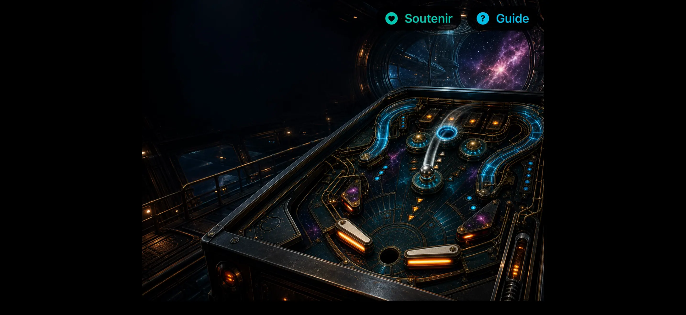
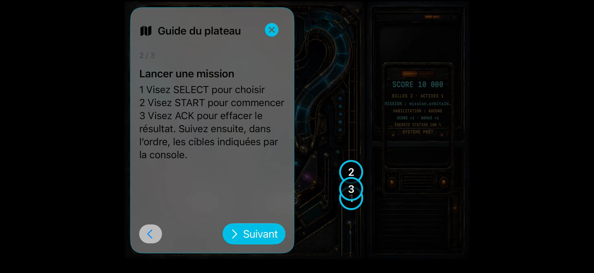
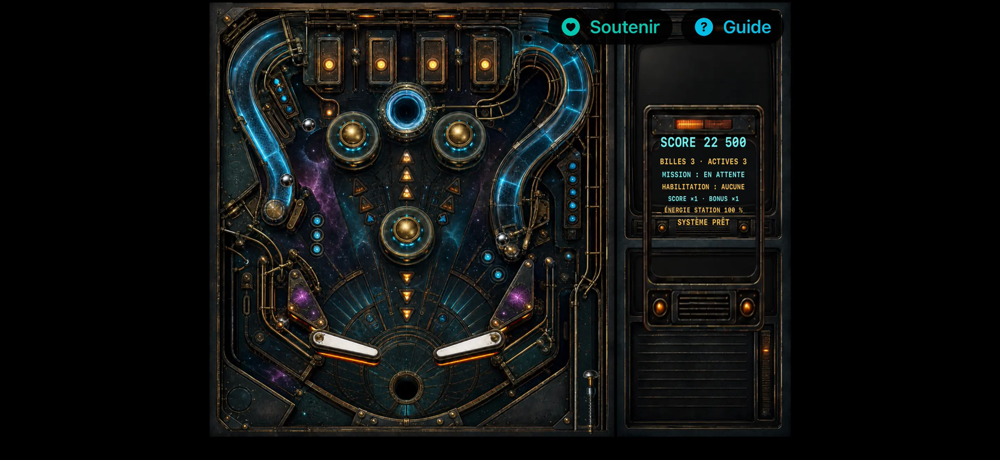

Une table complète, conçue pour les missions et le score
Nova Station Pinball
Flipper rétro, réflexes purs
Explorez toute la table avec le guide interactif, puis maîtrisez 17 missions, neuf promotions et le multibille. Contrôles réactifs, hors ligne et sans pub.
Bientôt dans l’ App Store
- 01
- 17 missions
- 02
- Jeu hors ligne et Game Center facultatif
- 03
- Sans pub ni tracking



Capture réelle du candidat actuel en jeu.
Journal de maintenance
Lisez les couloirs. Gardez la station en ligne.
Commandes à deux pouces
Utilisez des batteurs réactifs, un lanceur à tirer puis relâcher et un geste court pour secouer, avec protection contre le tilt.
Une progression par missions
Gravissez les rampes, ouvrez le portail, terminez les missions chronométrées, obtenez neuf habilitations et déclenchez le multibille.
Une table complète
Le plateau 4:3 et sa console d’état restent visibles en paysage sur iPhone comme sur iPad.
Lire le briefing complet
Prenez le contrôle de Nova Station, une table de flipper rétrofuturiste complète, conçue pour les réflexes rapides et la chasse au score.
Chaque partie commence avec trois billes et un objectif clair : maintenir la station en ligne. Enchaînez les bumpers, gravissez les rampes, ouvrez le portail, terminez les missions chronométrées, obtenez neuf promotions d’habilitation et déclenchez le multibille. Une simulation déterministe précise garantit des rebonds, frappes, secousses et tilts cohérents.
PENSÉ POUR LE FLIPPER; Batteurs réactifs sous les deux pouces; Lanceur à tirer puis relâcher; Geste horizontal court pour secouer, avec protection contre le tilt; Guide interactif des contrôles, voies de mission et cibles de progression; Missions, multiplicateurs, bonus, billes supplémentaires et multibille; Records locaux enregistrés sur votre appareil; Classement Game Center facultatif
UNE TABLE COMPLÈTE; La table 4:3 et sa console d’état restent entièrement visibles en paysage sur iPhone comme sur iPad. Des illustrations bitmap, sons et vibrations originaux composent une ambiance rétro-PC tactile et haut de gamme, avec une identité propre.
JOUEZ À VOTRE FAÇON; Nova Station Pinball fonctionne hors ligne et ne demande aucun compte. L’app ne contient ni publicité ni suivi. Dans la version 1.0, le jeu entier est disponible gratuitement au téléchargement. Les pourboires facultatifs de cette version soutiennent le développement sans débloquer de fonction ni modifier le gameplay.
Disponible en français et en anglais.
Assistance humaine
Une question ou quelque chose à signaler ?
Écrivez via le formulaire d’assistance privé. Aucune adresse e-mail du développeur n’est publiée.